12. Versión 7 - Aplicación web PAM con múltiples vistas y páginas
Volvemos aquí a la arquitectura inicial en la que se simulaba la capa [métier]. Ahora sabemos que esta puede sustituirse fácilmente por la capa real [métier]. La capa simulada [métier] facilita las pruebas.
 |
Una aplicación JSF es de tipo MVC (Modelo-Vista-Controlador):
- el servlet [Faces Servlet] es el controlador genérico proporcionado por JSF. Este controlador se amplía mediante los gestores de eventos específicos de la aplicación. Los gestores de eventos que hemos visto hasta ahora eran métodos de las clases que sirven de plantillas para las páginas JSF
- Las páginas JSF envían las respuestas al navegador del cliente. Estas son las vistas de la aplicación.
- Las páginas JSF contienen elementos dinámicos que se denominan «modelo de la página». Cabe recordar que, para algunos autores, el modelo abarca las entidades manipuladas por la aplicación, como, por ejemplo, las clases FeuilleSalaire o Employe. Para distinguir estos dos modelos, se puede hablar del modelo de la aplicación y del modelo de una página JSF.
En la arquitectura JSF, el paso de una página JSFi a una página JSFj puede resultar problemático.
- Se ha mostrado la página JSFi. Desde esta página, el usuario activa un POST mediante cualquier evento [1]
- en JSF, este POST se procesará, por lo general, mediante un método C del modelo Mi de la página JSFi. Se puede decir que el método C es un controlador secundario.
- Si, al finalizar este método, debe mostrarse la página JSFj, el controlador C debe:
- actualizar [2c], el modelo Mj de la página JSFj
- devolver a [2a] al controlador principal la clave de navegación que permitirá mostrar la página JSFj
El paso 1 requiere que la plantilla Mi de la página JSFi haga referencia a la plantilla Mj de la página JSFj. Esto complica un poco las cosas, ya que hace que las plantillas Mi dependan unas de otras. De hecho, el gestor C de la plantilla Mi que actualiza la plantilla Mj debe conocer esta última. Si hay que modificar la plantilla Mj, habrá que modificar también el gestor C de la plantilla Mi.
Existe un caso en el que se puede evitar la dependencia entre los modelos: aquel en el que hay un único modelo M que sirve para todas las páginas JSF. Esta arquitectura solo se puede utilizar en aplicaciones que tengan pocas vistas, pero resulta muy sencilla de usar. Es la que utilizamos actualmente.
En este contexto, la arquitectura de la aplicación es la siguiente:
 |
12.1. Las vistas de la aplicación
Las diferentes vistas que se muestran al usuario serán las siguientes:
-
la vista [VueSaisies], que muestra el formulario de simulación
-
la vista [VueSimulation], que se utiliza para mostrar el resultado detallado de la simulación:

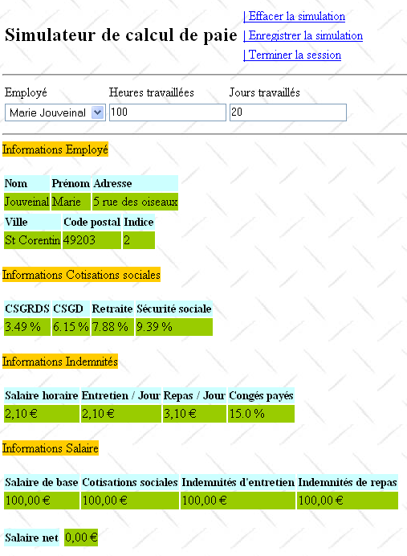
- la vista [VueSimulations], que muestra la lista de simulaciones realizadas por el cliente
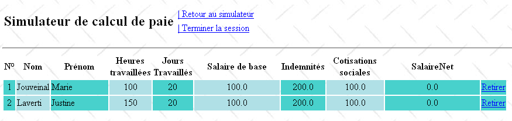
- la vista [VueSimulationsVides], que indica que el cliente no tiene simulaciones o ya no las tiene:

- la vista [VueErreur], que indica uno o varios errores:

12.2. El proyecto NetBeans de la capa [web]
El proyecto NetBeans de esta versión será el siguiente proyecto Maven:
 |
- en [1], los archivos de configuración,
- en [2], las páginas; en JSF,
- en [3], la hoja de estilo y la imagen de fondo de las vistas,
- en [4], las clases de la capa [web],
- en [5], las capas inferiores de la aplicación,
- en [6], el archivo de mensajes para la internacionalización de la aplicación,
- en [7], las dependencias del proyecto.
Repasamos algunos de estos elementos.
12.2.1. Los archivos de configuración
Los archivos [web.xml] y [faces-config.xml] son idénticos a los del proyecto anterior, salvo por un detalle en [web.xml]:
<?xml version="1.0" encoding="UTF-8"?>
<web-app version="3.0" xmlns="http://java.sun.com/xml/ns/javaee" xmlns:xsi="http://www.w3.org/2001/XMLSchema-instance" xsi:schemaLocation="http://java.sun.com/xml/ns/javaee http://java.sun.com/xml/ns/javaee/web-app_3_0.xsd">
...
<welcome-file-list>
<welcome-file>faces/saisie.xhtml</welcome-file>
</welcome-file-list>
...
</web-app>
- líneas 4-6: la página de inicio es la página [saisie.xhtml]
12.2.2. La hoja de estilo
El archivo [styles.css] es el siguiente:
.simulationsHeader {
text-align: center;
font-style: italic;
color: Snow;
background: Teal;
}
.simuNum {
height: 25px;
text-align: center;
background: MediumTurquoise;
}
.simuNom {
text-align: left;
background: PowderBlue;
}
.simuPrenom {
width: 6em;
text-align: left;
color: Black;
background: MediumTurquoise;
}
.simuHT {
width: 3em;
text-align: center;
color: Black;
background: PowderBlue;
}
.simuJT {
width: 3em;
text-align: center;
color: Black;
background: MediumTurquoise;
}
.simuSalaireBase {
width: 9em;
text-align: center;
color: Black;
background: PowderBlue;
}
.simuIndemnites {
width: 3em;
text-align: center;
color: Black;
background: MediumTurquoise;
}
.simuCotisationsSociales {
width: 6em;
text-align: center;
background: PowderBlue;
}
.simuSalaireNet {
width: 10em;
text-align: center;
background: MediumTurquoise;
}
.erreursHeaders {
background: Teal;
background-color: #ff6633;
color: Snow;
font-style: italic;
text-align: center
}
.erreurClasse {
background: MediumTurquoise;
background-color: #ffcc66;
height: 25px;
text-align: center
}
.erreurMessage {
background: PowderBlue;
background-color: #ffcc99;
text-align: left
}
A continuación se muestran ejemplos de código JSF que utilizan estos estilos:
Vista «Simulaciones»
<h:dataTable value="#{form.simulations}" var="simulation"
headerClass="simulationsHeaders" columnClasses="simuNum,simuNom,simuPrenom,simuHT,simuJT,simuSalaireBase,simuIndemnites,simuCotisationsSociales,simuSalaireNet">
El resultado obtenido es el siguiente:

Vista de error
<h:dataTable value="#{form.erreurs}" var="erreur"
headerClass="erreursHeaders" columnClasses="erreurClasse,erreurMessage">

12.2.3. El archivo de mensajes
El archivo de mensajes [messages_fr.properties] es el siguiente:
form.titre=Simulateur de calcul de paie
form.comboEmployes.libell\u00e9=Employ\u00e9
form.heuresTravaill\u00e9es.libell\u00e9=Heures travaill\u00e9es
form.joursTravaill\u00e9s.libell\u00e9=Jours travaill\u00e9s
form.heuresTravaill\u00e9es.required=Indiquez le nombre d'heures travaill\u00e9es
form.heuresTravaill\u00e9es.validation=Donn\u00e9e incorrecte
form.joursTravaill\u00e9s.required=Indiquez le nombre de jours travaill\u00e9s
form.joursTravaill\u00e9s.validation=Donn\u00e9e incorrecte
form.btnSalaire.libell\u00e9=Salaire
form.btnRaz.libell\u00e9=Raz
exception.header=L'exception suivante s'est produite
exception.httpCode=Code HTTP de l'erreur
exception.message=Message de l'exception
exception.requestUri=Url demand\u00e9e lors de l'erreur
exception.servletName=Nom de la servlet demand\u00e9e lorsque l'erreur s'est produite
form.infos.employ\u00e9=Informations Employ\u00e9
form.employe.nom=Nom
form.employe.pr\u00e9nom=Pr\u00e9nom
form.employe.adresse=Adresse
form.employe.ville=Ville
form.employe.codePostal=Code postal
form.employe.indice=Indice
form.infos.cotisations=Informations Cotisations sociales
form.cotisations.csgrds=CSGRDS
form.cotisations.csgd=CSGD
form.cotisations.retraite=Retraite
form.cotisations.secu=S\u00e9curit\u00e9 sociale
form.infos.indemnites=Informations Indemnit\u00e9s
form.indemnites.salaireHoraire=Salaire horaire
form.indemnites.entretienJour=Entretien / Jour
form.indemnites.repasJour=Repas / Jour
form.indemnites.cong\u00e9sPay\u00e9s=Cong\u00e9s pay\u00e9s
form.infos.salaire=Informations Salaire
form.salaire.base=Salaire de base
form.salaire.cotisationsSociales=Cotisations sociales
form.salaire.entretien=Indemnit\u00e9s d'entretien
form.salaire.repas=Indemnit\u00e9s de repas
form.salaire.net=Salaire net
form.menu.faireSimulation=| Faire la simulation
form.menu.effacerSimulation=| Effacer la simulation
form.menu.enregistrerSimulation=| Enregistrer la simulation
form.menu.retourSimulateur=| Retour au simulateur
form.menu.voirSimulations=| Voir les simulations
form.menu.terminerSession=| Terminer la session
simulations.headers.nom=Nom
simulations.headers.nom=Nom
simulations.headers.prenom=Pr\u00e9nom
simulations.headers.heuresTravaillees=Heures travaill\u00e9es
simulations.headers.joursTravailles=Jours Travaill\u00e9s
simulations.headers.salaireBase=Salaire de base
simulations.headers.indemnites=Indemnit\u00e9s
simulations.headers.cotisationsSociales=Cotisations sociales
simulations.headers.salaireNet=SalaireNet
simulations.headers.numero=N\u00b0
erreur.titre=Une erreur s'est produite.
erreur.exceptions=Cha\u00eene des exceptions
exception.type=Type de l'exception
exception.message=Message associ\u00e9
12.2.4. La capa [métier]
La capa simulada [métier] se modifica de la siguiente manera:
package metier;
...
public class Metier implements ImetierLocal, Serializable {
// lista de empleados
private Map<String,Employe> hashEmployes=new HashMap<String,Employe>();
private List<Employe> listEmployes;
// obtener la nómina
public FeuilleSalaire calculerFeuilleSalaire(String SS,
double nbHeuresTravaillées, int nbJoursTravaillés) {
// se recupera el empleado
Employe e=hashEmployes.get(SS);
// se devuelve una excepción si el empleado no existe
if(e==null){
throw new PamException(String.format("L'employé de n° SS [%s] n'existe pas",SS),1);
}
// se devuelve una nómina ficticia
return new FeuilleSalaire(e,new Cotisation(3.49,6.15,9.39,7.88),e.getIndemnite(),new ElementsSalaire(100,100,100,100,100));
}
// lista de empleados
public List<Employe> findAllEmployes() {
if(listEmployes==null){
// se crea una lista de tres empleados
listEmployes=new ArrayList<Employe>();
listEmployes.add(new Employe("254104940426058","Jouveinal","Marie","5 rue des oiseaux","St Corentin","49203",new Indemnite(2,2.1,2.1,3.1,15)));
listEmployes.add(new Employe("260124402111742","Laverti","Justine","La brûlerie","St Marcel","49014",new Indemnite(1,1.93,2,3,12)));
// diccionario de empleados
for(Employe e:listEmployes){
hashEmployes.put(e.getSS(),e);
}
// se añade un empleado que no existe en el diccionario
listEmployes.add(new Employe("X","Y","Z","La brûlerie","St Marcel","49014",new Indemnite(1,1.93,2,3,12)));
}
// se muestra la lista de empleados
return listEmployes;
}
}
- línea 8: la lista de empleados
- línea 7: la misma lista en forma de diccionario indexado por el n.º SS de los empleados
- líneas 24-39: el método findAllEmployes que devuelve la lista de empleados. Este método crea una lista fija y hace referencia al campo employés de la línea 8.
- líneas 27-33: se crean una lista y un diccionario con dos empleados
- línea 35: se añade un empleado a la lista de empleados (línea 8), pero no al diccionario hashEmployes (línea 7). Esto se hace para que aparezca en el menú desplegable de empleados, pero para que luego no sea reconocido por el método calculerFeuilleSalaire (línea 14), de modo que este lance una excepción (línea 17).
- líneas 11-21: el método calculerFeuilleSalaire
- línea 14: se busca al empleado en el diccionario hashEmployes mediante su n.º SS. Si no se encuentra, se lanza una excepción (líneas 16-18). Así, tendremos una excepción para el empleado con el n.º SS X, añadido en la línea 35 a la lista de empleados, pero no en el diccionario hashEmployes.
- En la línea 20, se crea y se devuelve una nómina ficticia.
12.3. Los beans de la aplicación
Habrá tres beans con tres ámbitos de visibilidad diferentes:
 |
12.3.1. El bean ApplicationData
El bean ApplicationData tendrá el ámbito application:
package web.beans.application;
import java.io.Serializable;
import java.util.logging.Logger;
import javax.annotation.PostConstruct;
import javax.enterprise.context.ApplicationScoped;
import javax.inject.Named;
import metier.IMetierLocal;
import metier.Metier;
@Named
@ApplicationScoped
public class ApplicationData implements Serializable {
// capa de negocio
private IMetierLocal metier = new Metier();
// registrador
private boolean logsEnabled = true;
private final Logger logger = Logger.getLogger("pam");
public ApplicationData() {
}
@PostConstruct
public void init() {
// registro
if (isLogsEnabled()) {
logger.info("ApplicationData");
}
}
// getter y setter
...
}
- línea 11: la anotación @Named convierte a la clase en un bean gestionado. Cabe señalar que, a diferencia del proyecto anterior, no se ha utilizado la anotación @ManagedBean. El motivo es que la referencia a esta clase debe inyectarse en otra clase mediante la anotación @Inject y que esta última solo inyecta clases con la anotación @Named.
- línea 12: la anotación @ApplicationScoped convierte la clase en un objeto de ámbito de aplicación. Cabe señalar que la clase de la anotación es [javax.enterprise.context.ApplicationScoped] (línea 6) y no [javax.faces.bean.ApplicationScoped] como en los beans del proyecto anterior.
El bean ApplicationData tiene dos funciones:
- línea 16: mantener una referencia a la capa [métier],
- líneas 18-19: definir un registrador de logs que puedan utilizar los demás beans para generar registros en la consola de GlassFish.
12.3.2. El bean SessionData
El bean SessionData tendrá un ámbito de sesión:
package web.beans.session;
import java.io.Serializable;
import java.util.ArrayList;
import java.util.List;
import javax.annotation.PostConstruct;
import javax.enterprise.context.SessionScoped;
import javax.inject.Inject;
import javax.inject.Named;
import web.beans.application.ApplicationData;
import web.entities.Simulation;
@Named
@SessionScoped
public class SessionData implements Serializable {
// aplicación
@Inject
private ApplicationData applicationData;
// simulaciones
private List<Simulation> simulations = new ArrayList<Simulation>();
private int numDerniereSimulation = 0;
private Simulation simulation;
// menús
private boolean menuFaireSimulationIsRendered = true;
private boolean menuEffacerSimulationIsRendered = true;
private boolean menuEnregistrerSimulationIsRendered;
private boolean menuVoirSimulationsIsRendered;
private boolean menuRetourSimulateurIsRendered;
private boolean menuTerminerSessionIsRendered = true;
// configuración regional
private String locale="fr_FR";
// constructor
public SessionData() {
}
@PostConstruct
public void init() {
// registro
if (applicationData.isLogsEnabled()) {
applicationData.getLogger().info("SessionData");
}
}
// gestión de menús
public void setMenu(boolean menuFaireSimulationIsRendered, boolean menuEnregistrerSimulationIsRendered, boolean menuEffacerSimulationIsRendered, boolean menuVoirSimulationsIsRendered, boolean menuRetourSimulateurIsRendered, boolean menuTerminerSessionIsRendered) {
this.setMenuFaireSimulationIsRendered(menuFaireSimulationIsRendered);
this.setMenuEnregistrerSimulationIsRendered(menuEnregistrerSimulationIsRendered);
this.setMenuVoirSimulationsIsRendered(menuVoirSimulationsIsRendered);
this.setMenuEffacerSimulationIsRendered(menuEffacerSimulationIsRendered);
this.setMenuRetourSimulateurIsRendered(menuRetourSimulateurIsRendered);
this.setMenuTerminerSessionIsRendered(menuTerminerSessionIsRendered);
}
// getters y setters
...
}
- línea 13: la clase SessionData es un bean gestionado (@Named) que podrá inyectarse en otros beans gestionados,
- línea 14: tiene alcance de sesión (@SessionScoped),
- líneas 18-19: se le inyecta una referencia al bean ApplicationData (@Inject),
- líneas 21-32: los datos de la aplicación que deben conservarse a lo largo de las sesiones.
- línea 21: la lista de simulaciones realizadas por el usuario,
- línea 22: el número de la última simulación guardada,
- línea 23: la última simulación realizada,
- líneas 25-30: las opciones del menú,
- línea 32: la configuración regional de la aplicación.
Líneas 39-44: el método init se ejecuta tras la instanciación de la clase (@PostConstruct). En este caso, solo se utiliza para dejar constancia de su ejecución. Debe poder comprobarse que solo se ejecuta una vez por usuario, ya que la clase tiene un ámbito de sesión. Línea 42: el método utiliza el registrador definido en la clase ApplicationData. Por este motivo era necesario inyectar una referencia a este bean (líneas 18-19).
12.3.3. El bean Form
El bean Form tiene un ámbito requête:
package web.beans.request;
import java.util.ArrayList;
import java.util.List;
import javax.enterprise.context.RequestScoped;
import javax.faces.context.FacesContext;
import javax.inject.Inject;
import javax.inject.Named;
import javax.servlet.http.HttpServletRequest;
import jpa.Employe;
import metier.FeuilleSalaire;
import web.beans.application.ApplicationData;
import web.beans.session.*;
import web.entities.Erreur;
import web.entities.Simulation;
@Named
@RequestScoped
public class Form {
public Form() {
}
// otros beans
@Inject
private ApplicationData applicationData;
@Inject
private SessionData sessionData;
// el modelo de las vistas
private String comboEmployesValue = "";
private String heuresTravaillées = "";
private String joursTravaillés = "";
private Integer numSimulationToDelete;
private List<Erreur> erreurs = new ArrayList<Erreur>();
private FeuilleSalaire feuilleSalaire;
// lista de empleados
public List<Employe> getEmployes(){
return applicationData.getMetier().findAllEmployes();
}
// acción del menú
public String faireSimulation() {
...
}
public String enregistrerSimulation() {
...
}
public String effacerSimulation() {
...
}
public String voirSimulations() {
...
}
public String retourSimulateur() {
...
}
public String terminerSession() {
...
}
public String retirerSimulation() {
...
}
private void razFormulaire() {
...
}
// getters y setters
...
}
- línea 17, la clase es un bean gestionado (@Named),
- línea 18, de ámbito de solicitud (@RequestScoped),
- líneas 24-25: inyección de una referencia al bean de ámbito de aplicación ApplicationData,
- líneas 26-27: inyección de una referencia al bean de ámbito de sesión SessionData.
12.4. Las páginas de la aplicación
 |
12.4.1. [layout.xhtml]
La página [layout.xhtml] se encarga del diseño de todas las vistas:
<?xml version='1.0' encoding='UTF-8' ?>
<!DOCTYPE html PUBLIC "-//W3C//DTD XHTML 1.0 Transitional//EN" "http://www.w3.org/TR/xhtml1/DTD/xhtml1-transitional.dtd">
<html xmlns="http://www.w3.org/1999/xhtml"
xmlns:h="http://java.sun.com/jsf/html"
xmlns:f="http://java.sun.com/jsf/core"
xmlns:ui="http://java.sun.com/jsf/facelets">
<f:view locale="#{sessionData.locale}">
<h:head>
<title><h:outputText value="#{msg['form.titre']}"/></title>
<h:outputStylesheet library="css" name="styles.css"/>
</h:head>
<script type="text/javascript">
function raz(){
// modificamos los valores enviados
document.forms['formulaire'].elements['formulaire:comboEmployes'].value="0";
document.forms['formulaire'].elements['formulaire:heuresTravaillees'].value="0";
document.forms['formulaire'].elements['formulaire:joursTravailles'].value="0";
}
</script>
<h:body style="background-image: url('${request.contextPath}/resources/images/standard.jpg');">
<h:form id="formulaire">
<!-- encabezado -->
<ui:include src="entete.xhtml" />
<!-- contenido -->
<ui:insert name="part1" >
Gestion des assistantes maternelles
</ui:insert>
<ui:insert name="part2"/>
</h:form>
</h:body>
</f:view>
</html>
Cada vista está compuesta por los siguientes elementos:
- un encabezado mostrado por el fragmento [entete.xhtml] (línea 24),
- un cuerpo formado por dos fragmentos denominados «part1» (líneas 26-28) y «part2» (línea 29),
- línea 8: el atributo «local» se encarga de la internacionalización de las páginas. En este caso solo habrá uno: fr_FR,
- líneas 14-19: un código JavaScript.
La visualización de la página [layout.xhtml] es la siguiente:
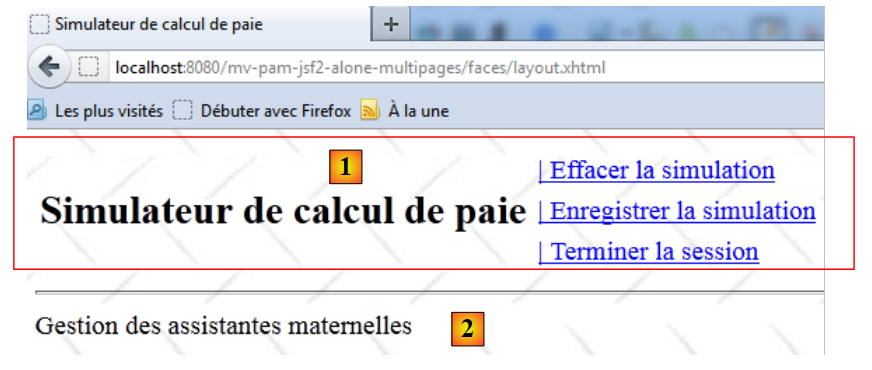 |
- en [1], el encabezado [entete.xhtml],
- en [2], el fragmento «part1».
12.4.2. El encabezado [entete.xhtml]
El código de la página [entete.xhtml] es el siguiente:
<?xml version='1.0' encoding='UTF-8' ?>
<!DOCTYPE html PUBLIC "-//W3C//DTD XHTML 1.0 Transitional//EN" "http://www.w3.org/TR/xhtml1/DTD/xhtml1-transitional.dtd">
<html xmlns="http://www.w3.org/1999/xhtml"
xmlns:h="http://java.sun.com/jsf/html"
xmlns:f="http://java.sun.com/jsf/core"
xmlns:ui="http://java.sun.com/jsf/facelets">
<ui:composition>
<!-- encabezado -->
<h:panelGrid columns="2">
<h:panelGroup>
<h2><h:outputText value="#{msg['form.titre']}"/></h2>
</h:panelGroup>
<h:panelGroup>
<h:panelGrid columns="1">
<h:commandLink id="cmdFaireSimulation" value="#{msg['form.menu.faireSimulation']}" action="#{form.faireSimulation}" rendered="#{sessionData.menuFaireSimulationIsRendered}"/>
<h:commandLink id="cmdEffacerSimulation" onclick="raz()" value="#{msg['form.menu.effacerSimulation']}" action="#{form.effacerSimulation}" rendered="#{sessionData.menuEffacerSimulationIsRendered}"/>
<h:commandLink id="cmdEnregistrerSimulation" immediate="true" value="#{msg['form.menu.enregistrerSimulation']}" action="#{form.enregistrerSimulation}" rendered="#{sessionData.menuEnregistrerSimulationIsRendered}"/>
<h:commandLink id="cmdVoirSimulations" immediate="true" value="#{msg['form.menu.voirSimulations']}" action="#{form.voirSimulations}" rendered="#{sessionData.menuVoirSimulationsIsRendered}"/>
<h:commandLink id="cmdRetourSimulateur" immediate="true" value="#{msg['form.menu.retourSimulateur']}" action="#{form.retourSimulateur}" rendered="#{sessionData.menuRetourSimulateurIsRendered}"/>
<h:commandLink id="cmdTerminerSession" immediate="true" value="#{msg['form.menu.terminerSession']}" action="#{form.terminerSession}" rendered="#{sessionData.menuTerminerSessionIsRendered}"/>
</h:panelGrid>
</h:panelGroup>
</h:panelGrid>
<hr/>
</ui:composition>
</html>
- línea 12: el título de la aplicación,
- líneas 16-21: los seis enlaces correspondientes a las seis acciones que puede realizar el usuario. Estos enlaces están controlados (atributo «rendered») por valores booleanos del bean SessionData,
- línea 17: al hacer clic en el enlace [Effacer la simulation] se ejecuta la función JavaScript «raz». Esta se ha definido en el modelo [layout.xhtml],
- línea 18: el atributo immediate=true hace que no se compruebe la validez de los datos antes de la ejecución del método [Form].enregistrerSimulation. Esto es intencionado. Es posible que se desee guardar la última simulación realizada hace un minuto, aunque los datos introducidos desde entonces en el formulario (pero aún no validados) no sean válidos. Lo mismo ocurre con las acciones [Voir les simulations], [Effacer la simulation], [Retour au simulateur] y [Terminer la session].
12.5. Casos de uso de la aplicación
12.5.1. Visualización de la página de inicio
La página de inicio es la siguiente página [saisie.xhtml]:
<?xml version='1.0' encoding='UTF-8' ?>
<!DOCTYPE html PUBLIC "-//W3C//DTD XHTML 1.0 Transitional//EN" "http://www.w3.org/TR/xhtml1/DTD/xhtml1-transitional.dtd">
<html xmlns="http://www.w3.org/1999/xhtml"
xmlns:h="http://java.sun.com/jsf/html"
xmlns:f="http://java.sun.com/jsf/core"
xmlns:ui="http://java.sun.com/jsf/facelets">
<ui:composition template="layout.xhtml">
<ui:define name="part1">
<ui:include src="saisie2.xhtml"/>
</ui:define>
</ui:composition>
</html>
- línea 8: se muestra dentro de la página [layout.xhtml],
- línea 9: en lugar del fragmento denominado «part1». En este fragmento, se muestra la página [saisie2.xhtml]:
<?xml version='1.0' encoding='UTF-8' ?>
<!DOCTYPE html PUBLIC "-//W3C//DTD XHTML 1.0 Transitional//EN" "http://www.w3.org/TR/xhtml1/DTD/xhtml1-transitional.dtd">
<html xmlns="http://www.w3.org/1999/xhtml"
xmlns:h="http://java.sun.com/jsf/html"
xmlns:f="http://java.sun.com/jsf/core"
xmlns:ui="http://java.sun.com/jsf/facelets">
<h:panelGrid columns="3">
<h:outputText value="#{msg['form.comboEmployes.libellé']}"/>
<h:outputText value="#{msg['form.heuresTravaillées.libellé']}"/>
<h:outputText value="#{msg['form.joursTravaillés.libellé']}"/>
<h:selectOneMenu id="comboEmployes" value="#{form.comboEmployesValue}">
<f:selectItems .../>
</h:selectOneMenu>
<h:inputText id="heuresTravaillees" value="#{form.heuresTravaillées}" required="true" requiredMessage="#{msg['form.heuresTravaillées.required']}" validatorMessage="#{msg['form.heuresTravaillées.validation']}">
<f:validateDoubleRange minimum="0" maximum="300"/>
</h:inputText>
<h:inputText id="joursTravailles" value="#{form.joursTravaillés}" required="true" requiredMessage="#{msg['form.joursTravaillés.required']}" validatorMessage="#{msg['form.joursTravaillés.validation']}">
<f:validateLongRange minimum="0" maximum="31"/>
</h:inputText>
<h:panelGroup></h:panelGroup>
<h:message for="heuresTravaillees" styleClass="error"/>
<h:message for="joursTravailles" styleClass="error"/>
</h:panelGrid>
<hr/>
</html>
Este código muestra la siguiente vista:
 |
Pregunta: completa la línea 13 del código XHTML. La lista de elementos del cuadro combinado de empleados la proporciona un método del bean [Form]. Escribe este método. Los elementos mostrados en el menú desplegable tendrán su propiedad itemValue igual al n.º SS de un empleado, y la propiedad itemLabel será una cadena formada por el nombre y los apellidos de dicho empleado.
Pregunta: ¿cómo debe inicializarse el bean [SessionData] para que, al realizar la consulta inicial GET al formulario, el menú de la cabecera sea el que se muestra arriba?
12.5.2. La acción [faireSimulation]
El código JSF de la acción [faireSimulation] es el siguiente:
<h:commandLink id="cmdFaireSimulation" value="#{msg['form.menu.faireSimulation']}" action="#{form.faireSimulation}" rendered="#{sessionData.menuFaireSimulationIsRendered}"/>
La acción [faireSimulation] calcula una nómina:
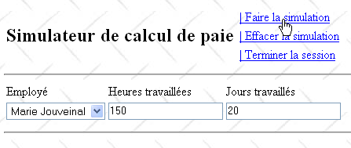
A partir de la página anterior, se obtiene el siguiente resultado:
 |
 |
La simulación se muestra en la siguiente página [simulation.xhtml]:
<?xml version='1.0' encoding='UTF-8' ?>
<!DOCTYPE html PUBLIC "-//W3C//DTD XHTML 1.0 Transitional//EN" "http://www.w3.org/TR/xhtml1/DTD/xhtml1-transitional.dtd">
<html xmlns="http://www.w3.org/1999/xhtml"
xmlns:h="http://java.sun.com/jsf/html"
xmlns:f="http://java.sun.com/jsf/core"
xmlns:ui="http://java.sun.com/jsf/facelets">
<ui:composition template="layout.xhtml">
<ui:define name="part1">
<ui:include src="saisie2.xhtml"/>
</ui:define>
<ui:define name="part2">
<h:outputText value="#{msg['form.infos.employé']}" styleClass="titreInfos"/>
<br/><br/>
<h:panelGrid columns="3" rowClasses="libelle,info">
<h:outputText value="#{msg['form.employe.nom']}"/>
<h:outputText value="#{msg['form.employe.prénom']}"/>
<h:outputText value="#{msg['form.employe.adresse']}"/>
<h:outputText value="#{form.feuilleSalaire.employe.nom}"/>
<h:outputText value="#{form.feuilleSalaire.employe.prenom}"/>
<h:outputText value="#{form.feuilleSalaire.employe.adresse}"/>
</h:panelGrid>
<h:panelGrid columns="3" rowClasses="libelle,info">
<h:outputText value="#{msg['form.employe.ville']}"/>
<h:outputText value="#{msg['form.employe.codePostal']}"/>
<h:outputText value="#{msg['form.employe.indice']}"/>
<h:outputText value="#{form.feuilleSalaire.employe.ville}"/>
<h:outputText value="#{form.feuilleSalaire.employe.codePostal}"/>
<h:outputText value="#{form.feuilleSalaire.employe.indemnite.indice}"/>
</h:panelGrid>
<br/>
<h:outputText value="#{msg['form.infos.cotisations']}" styleClass="titreInfos"/>
<br/><br/>
<h:panelGrid columns="4" rowClasses="libelle,info">
<h:outputText value="#{msg['form.cotisations.csgrds']}"/>
<h:outputText value="#{msg['form.cotisations.csgd']}"/>
<h:outputText value="#{msg['form.cotisations.retraite']}"/>
<h:outputText value="#{msg['form.cotisations.secu']}"/>
<h:outputText value="#{form.feuilleSalaire.cotisation.csgrds} %"/>
<h:outputText value="#{form.feuilleSalaire.cotisation.csgd} %"/>
<h:outputText value="#{form.feuilleSalaire.cotisation.retraite} %"/>
<h:outputText value="#{form.feuilleSalaire.cotisation.secu} %"/>
</h:panelGrid>
<br/>
<h:outputText value="#{msg['form.infos.indemnites']}" styleClass="titreInfos"/>
<br/><br/>
<h:panelGrid columns="4" rowClasses="libelle,info">
<h:outputText value="#{msg['form.indemnites.salaireHoraire']}"/>
<h:outputText value="#{msg['form.indemnites.entretienJour']}"/>
<h:outputText value="#{msg['form.indemnites.repasJour']}"/>
<h:outputText value="#{msg['form.indemnites.congésPayés']}"/>
<h:outputFormat value="{0,number,currency}">
<f:param value="#{form.feuilleSalaire.employe.indemnite.baseHeure}"/>
</h:outputFormat>
<h:outputFormat value="{0,number,currency}">
<f:param value="#{form.feuilleSalaire.employe.indemnite.entretienJour}"/>
</h:outputFormat>
<h:outputFormat value="{0,number,currency}">
<f:param value="#{form.feuilleSalaire.employe.indemnite.repasJour}"/>
</h:outputFormat>
<h:outputText value="#{form.feuilleSalaire.employe.indemnite.indemnitesCP} %"/>
</h:panelGrid>
<br/>
<h:outputText value="#{msg['form.infos.salaire']}" styleClass="titreInfos"/>
<br/><br/>
<h:panelGrid columns="4" rowClasses="libelle,info">
<h:outputText value="#{msg['form.salaire.base']}"/>
<h:outputText value="#{msg['form.salaire.cotisationsSociales']}"/>
<h:outputText value="#{msg['form.salaire.entretien']}"/>
<h:outputText value="#{msg['form.salaire.repas']}"/>
<h:outputFormat value="{0,number,currency}">
<f:param value="#{form.feuilleSalaire.elementsSalaire.salaireBase}"/>
</h:outputFormat>
<h:outputFormat value="{0,number,currency}">
<f:param value="#{form.feuilleSalaire.elementsSalaire.cotisationsSociales}"/>
</h:outputFormat>
<h:outputFormat value="{0,number,currency}">
<f:param value="#{form.feuilleSalaire.elementsSalaire.indemnitesEntretien}"/>
</h:outputFormat>
<h:outputFormat value="{0,number,currency}">
<f:param value="#{form.feuilleSalaire.elementsSalaire.indemnitesRepas}"/>
</h:outputFormat>
</h:panelGrid>
<br/>
<h:panelGrid columns="3" columnClasses="libelle,col2,info">
<h:outputText value="#{msg['form.salaire.net']}"/>
<h:panelGroup></h:panelGroup>
<h:outputFormat value="{0,number,currency}">
<f:param value="#{form.feuilleSalaire.elementsSalaire.salaireNet}"/>
</h:outputFormat>
</h:panelGrid>
</ui:define>
</ui:composition>
</html>
- en la línea 8, la página [simulation.xhtml] se inserta en la página [layout.xhtml],
- líneas 9-11: el área de entrada de datos se muestra en el fragmento «part1» de la página de diseño,
- líneas 12-91: la simulación se muestra en el fragmento «part2» de la página de diseño.
Pregunta: escribe el método [faireSimulation] de la clase [Form]. La simulación se guardará en el bean SessionData.
12.5.3. Gestión de errores
Queremos poder gestionar adecuadamente las excepciones que puedan surgir durante el cálculo de una simulación. Para ello, el código del método [faireSimulation] utilizará un try / catch:
// acción del menú
public String faireSimulation(){
try{
// se calcula la nómina
feuilleSalaire= ...
// se muestra la simulación
...
// se actualiza el menú
...
// se muestra la vista de simulación
return "simulation";
}catch(Throwable th){
// se vacía la lista de errores anteriores
...
// se crea la nueva lista de errores
...
// se muestra la vista vueErreur
...
// se actualiza el menú
...
// se muestra la vista de error
return "erreurs";
}
}
La lista de errores creada en la línea 15 es la siguiente:
// la plantilla de las vistas
...
private List<Erreur> erreurs=new ArrayList<Erreur>();
...
La clase Error se define de la siguiente manera:
package web.entities;
public class Erreur {
public Erreur() {
}
// campo
private String classe;
private String message;
// constructor
public Erreur(String classe, String message){
this.setClasse(classe);
this.message=message;
}
// getter y setter
...
}
Los errores serán excepciones cuyo nombre de clase se almacena en el campo «clase» y cuyo mensaje se almacena en el campo «mensaje».
La lista de errores generada en el método [faireSimulation] está formada por:
- la excepción inicial th de tipo Throwable que se ha producido,
- su causa th.getCause(), si la tiene,
- la causa de la causa h.getCause().getCause(), si existe.
- ...
A continuación se muestra un ejemplo de lista de errores:

En el ejemplo anterior, el empleado [Z Y] no existe en el diccionario de empleados utilizado por la capa simulada [métier]. En este caso, la capa simulada [métier] lanza una excepción (línea 6 a continuación):
public FeuilleSalaire calculerFeuilleSalaire(String SS, double nbHeuresTravaillées, int nbJoursTravaillés) {
// se recupera el empleado
Employe e=hashEmployes.get(SS);
// se lanza una excepción si el empleado no existe
if(e==null){
throw new PamException(String.format("L'employé de n° SS [%s] n'existe pas",SS),1);
}
...
}
El resultado obtenido es el siguiente:

Esta vista se muestra en la siguiente página [erreurs.xhtml]:
<?xml version='1.0' encoding='UTF-8' ?>
<!DOCTYPE html PUBLIC "-//W3C//DTD XHTML 1.0 Transitional//EN" "http://www.w3.org/TR/xhtml1/DTD/xhtml1-transitional.dtd">
<html xmlns="http://www.w3.org/1999/xhtml"
xmlns:h="http://java.sun.com/jsf/html"
xmlns:f="http://java.sun.com/jsf/core"
xmlns:ui="http://java.sun.com/jsf/facelets">
<ui:composition template="layout.xhtml">
<ui:define name="part1">
<h3><h:outputText value="#{msg['erreur.titre']}"/></h3>
<h:dataTable value="#{form.erreurs}" var="erreur"
headerClass="erreursHeaders" columnClasses="erreurClasse,erreurMessage">
<f:facet name="header">
<h:outputText value="#{msg['erreur.exceptions']}"/>
</f:facet>
<h:column>
<f:facet name="header">
<h:outputText value="#{msg['exception.type']}"/>
</f:facet>
<h:outputText value="#{erreur.classe}"/>
</h:column>
<h:column>
<f:facet name="header">
<h:outputText value="#{msg['exception.message']}"/>
</f:facet>
<h:outputText value="#{erreur.message}"/>
</h:column>
</h:dataTable>
</ui:define>
</ui:composition>
</html>
Pregunta: complete el método [faireSimulation] para que, en caso de excepción, se muestre la vista [vueErreur].
12.5.4. La acción [effacerSimulation]
La acción [effacerSimulation] permite al usuario acceder a un formulario en blanco:
 |
El código JSF del enlace [effacerSimulation] es el siguiente:
<h:commandLink id="cmdEffacerSimulation" onclick="raz()" value="#{msg['form.menu.effacerSimulation']}" action="#{form.effacerSimulation}" rendered="#{sessionData.menuEffacerSimulationIsRendered}"/>
Al hacer clic en el enlace [EffacerSimulation], primero se invoca la función JavaScript raz(). Este método se define en la página [layout.xhtml]:
<script type="text/javascript">
function raz(){
// se modifican los valores enviados
document.forms['formulaire'].elements['formulaire:comboEmployes'].value="0";
document.forms['formulaire'].elements['formulaire:heuresTravaillees'].value="0";
document.forms['formulaire'].elements['formulaire:joursTravailles'].value="0";
}
</script>
Las líneas 4-6 modifican los valores enviados. Cabe señalar que
- los valores enviados son válidos, c.a.d, y que superarán las comprobaciones de validación de los campos de entrada heuresTravaillees y joursTravailles.
- la función raz no envía el formulario. De hecho, este se enviará mediante el enlace cmdEffacerSimulation. Este post se ejecutará tras la ejecución de la función JavaScript raz.
Durante la ejecución de post, los valores enviados seguirán el proceso habitual: validación y, a continuación, asignación a los campos del modelo. Estos son los siguientes en la clase [Form]:
// la plantilla de las vistas
private String comboEmployesValue;
private String heuresTravaillées;
private String joursTravaillés;
...
Estos tres campos recibirán los tres valores introducidos {"0", "0", "0"}. Una vez realizada esta asignación, se ejecutará el método effacerSimulation.
Pregunta: Escribe el método [effacerSimulation] de la clase [Form]. Asegúrate de que:
-
solo se muestre el área de entrada de datos,
-
el menú desplegable esté situado en su primer elemento,
-
los campos de entrada heuresTravaillees y joursTravailles muestren cadenas vacías.
12.5.5. La acción [enregistrerSimulation]
El código JSF del enlace [enregistrerSimulation] es el siguiente:
<h:commandLink id="cmdEnregistrerSimulation" immediate="true" value="#{msg['form.menu.enregistrerSimulation']}" action="#{form.enregistrerSimulation}" rendered="#{sessionData.menuEnregistrerSimulationIsRendered}"/>
La acción [enregistrerSimulation] asociada al enlace permite guardar la simulación actual en una lista de simulaciones que se mantiene en la clase [SessionData]:
private List<Simulation> simulations=new ArrayList<Simulation>();
La clase « : Simulación» es la siguiente:
package web.entities;
import metier.FeuilleSalaire;
public class Simulation {
public Simulation() {
}
// campos de una simulación
private Integer num;
private FeuilleSalaire feuilleSalaire;
private String heuresTravaillées;
private String joursTravaillés;
// constructor
public Simulation(Integer num,String heuresTravaillées, String joursTravaillés, FeuilleSalaire feuilleSalaire){
this.setNum(num);
this.setFeuilleSalaire(feuilleSalaire);
this.setHeuresTravaillées(heuresTravaillées);
this.setJoursTravaillés(joursTravaillés);
}
public double getIndemnites(){
return feuilleSalaire.getElementsSalaire().getIndemnitesEntretien()+ feuilleSalaire.getElementsSalaire().getIndemnitesRepas();
}
// getters y setters
...
}
Esta clase permite guardar una simulación realizada por el usuario:
- línea 11: el número de la simulación,
- línea 12: la nómina que se ha calculado,
- línea 13: el número de horas trabajadas,
- línea 14: el número de días trabajados.
A continuación se muestra un ejemplo de registro:

A partir de la página anterior, se obtiene el siguiente resultado:

El número de la simulación es un número que se incrementa con cada nuevo registro. Pertenece al bean SessionData:
// simulaciones
private List<Simulation> simulations = new ArrayList<Simulation>();
private int numDerniereSimulation = 0;
private Simulation simulation;
- línea 2: el número de la última simulación realizada.
El método [enregistrerSimulation] puede proceder de la siguiente manera:
- obtener el número de la última simulación del bean [SessionData] e incrementarlo,
- añadir la nueva simulación a la lista de simulaciones que gestiona la clase [SessionData],
- mostrar la tabla de simulaciones:
 |
La tabla de simulaciones se muestra en la página [simulations.xhtml]:
<?xml version='1.0' encoding='UTF-8' ?>
<!DOCTYPE html PUBLIC "-//W3C//DTD XHTML 1.0 Transitional//EN" "http://www.w3.org/TR/xhtml1/DTD/xhtml1-transitional.dtd">
<html xmlns="http://www.w3.org/1999/xhtml"
xmlns:h="http://java.sun.com/jsf/html"
xmlns:f="http://java.sun.com/jsf/core"
xmlns:ui="http://java.sun.com/jsf/facelets">
<ui:composition template="layout.xhtml">
<ui:define name="part1">
<!-- tabla de simulaciones -->
<h:dataTable value="#{sessionData.simulations}" var="simulation"
headerClass="simulationsHeaders" columnClasses="simuNum,simuNom,simuPrenom,simuHT,simuJT,simuSalaireBase,simuIndemnites,simuCotisationsSociales,simuSalaireNet">
<h:column>
<f:facet name="header">
<h:outputText value="#{msg['simulations.headers.numero']}"/>
</f:facet>
<h:outputText value="#{simulation.num}"/>
</h:column>
<h:column>
<f:facet name="header">
<h:outputText value="#{msg['simulations.headers.nom']}"/>
</f:facet>
<h:outputText value="#{simulation.feuilleSalaire.employe.nom}"/>
</h:column>
<h:column>
<f:facet name="header">
<h:outputText value="#{msg['simulations.headers.prenom']}"/>
</f:facet>
<h:outputText value="#{simulation.feuilleSalaire.employe.prenom}"/>
</h:column>
<h:column>
<f:facet name="header">
<h:outputText value="#{msg['simulations.headers.heuresTravaillees']}"/>
</f:facet>
<h:outputText value="#{simulation.heuresTravaillées}"/>
</h:column>
<h:column>
<f:facet name="header">
<h:outputText value="#{msg['simulations.headers.joursTravailles']}"/>
</f:facet>
<h:outputText value="#{simulation.joursTravaillés}"/>
</h:column>
<h:column>
<f:facet name="header">
<h:outputText value="#{msg['simulations.headers.salaireBase']}"/>
</f:facet>
<h:outputText value="#{simulation.feuilleSalaire.elementsSalaire.salaireBase}"/>
</h:column>
<h:column>
<f:facet name="header">
<h:outputText value="#{msg['simulations.headers.indemnites']}"/>
</f:facet>
<h:outputText value="#{simulation.indemnites}"/>
</h:column>
<h:column>
<f:facet name="header">
<h:outputText value="#{msg['simulations.headers.cotisationsSociales']}"/>
</f:facet>
<h:outputText value="#{simulation.feuilleSalaire.elementsSalaire.cotisationsSociales}"/>
</h:column>
<h:column>
<f:facet name="header">
<h:outputText value="#{msg['simulations.headers.salaireNet']}"/>
</f:facet>
<h:outputText value="#{simulation.feuilleSalaire.elementsSalaire.salaireNet}"/>
</h:column>
<h:column>
<h:commandLink value="Retirer" action="#{form.retirerSimulation}">
<f:setPropertyActionListener target="#{form.numSimulationToDelete}" value="#{simulation.num}"/>
</h:commandLink>
</h:column>
</h:dataTable>
</ui:define>
</ui:composition>
</html>
- En la línea 8, la página [simulations.xhtml] se inserta dentro de la página [layout.xhtml],
- en la línea 9, en lugar del fragmento denominado «part1»,
- en la línea 11, la etiqueta <h:dataTable> utiliza el campo #{sessionData.simulations} como fuente de datos, c.a.d. El siguiente campo:
// simulaciones
private List<Simulation> simulations;
-
el atributo var="simulation" establece el nombre de la variable que representa la simulación actual dentro de la etiqueta <h:datatable>
-
el atributo headerClass="simulationsHeaders" establece el estilo de los encabezados de las columnas de la tabla.
-
El atributo columnClasses="...." establece el estilo de cada una de las columnas de la tabla
Analicemos una de las columnas de la tabla y veamos cómo está construida:
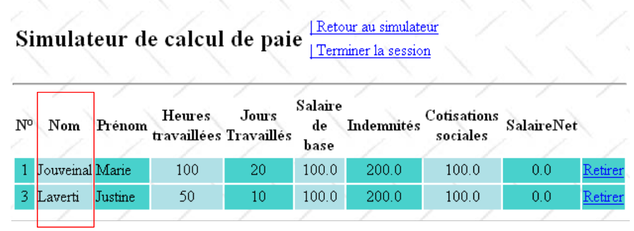 |
El código JSF de la columna Nom es el siguiente:
<h:column>
<f:facet name="header">
<h:outputText value="#{msg['simulations.headers.nom']}"/>
</f:facet>
<h:outputText value="#{simulation.feuilleSalaire.employe.nom}"/>
</h:column>
- líneas 2-4: la etiqueta <f:facet name="header"> define el título de la columna
- línea 5: se escribe el nombre del empleado:
- «simulación» hace referencia al atributo «var» de la etiqueta <h:dataTable ...>:
<h:dataTable value="#{sessionData.simulations}" var="simulation" ...>
«simulación» se refiere a la simulación actual de la lista de simulaciones: primero la primera, luego la segunda, …
- (continuación)
- simulation.feuilleSalaire hace referencia al campo feuilleSalaire de la simulación actual
- simulation.feuilleSalaire.employe hace referencia al campo «empleado» del campo feuilleSalaire
- simulation.feuilleSalaire.employe.nom hace referencia al campo «nombre» del campo «empleado»
Esta misma técnica se repite para todas las columnas de la tabla. Se presenta una dificultad con la columna «Indemnizaciones», que se genera con el siguiente código:
<h:column>
<f:facet name="header">
<h:outputText value="#{msg['simulations.headers.indemnites']}"/>
</f:facet>
<h:outputText value="#{simulation.indemnites}"/>
</h:column>
En la línea 5, se muestra el valor de simulation.indemnites. Sin embargo, la clase «Simulation» no tiene ningún campo «indemnites». Hay que tener en cuenta que el campo «indemnites» no se utiliza directamente, sino a través del método simulation.getIndemnites(). Por lo tanto, basta con que este método exista. El campo indemnites, en cambio, puede no existir. El método getIndemnites debe devolver el total de las indemnizaciones del empleado. Esto requiere un cálculo intermedio, ya que dicho total no está disponible directamente en la nómina. El método getIndemnites se proporciona en el apartado 12.5.5.
Pregunta: escribe el método [enregistrerSimulation] de la clase [Form].
12.5.6. La acción [retourSimulateur]
El código JSF del enlace [retourSimulateur] es el siguiente:
<h:commandLink id="cmdRetourSimulateur" immediate="true" value="#{msg['form.menu.retourSimulateur']}" action="#{form.retourSimulateur}" rendered="#{sessionData.menuRetourSimulateurIsRendered}"/>
La acción [retourSimulateur] asociada al enlace permite al usuario volver de la vista [vueSimulations] a la vista [vueSaisies]:

El resultado obtenido:

Pregunta: escribe el método [retourSimulateur] de la clase [Form]. El formulario de entrada que se muestra debe estar vacío, tal y como se indica arriba.
12.5.7. La acción [voirSimulations]
El código JSF del enlace [voirSimulations] es el siguiente:
<h:commandLink id="cmdVoirSimulations" immediate="true" value="#{msg['form.menu.voirSimulations']}" action="#{form.voirSimulations}" rendered="#{sessionData.menuVoirSimulationsIsRendered}"/>
La acción [voirSimulations] asociada al enlace permite al usuario acceder a la tabla de simulaciones, independientemente del estado de sus datos introducidos:
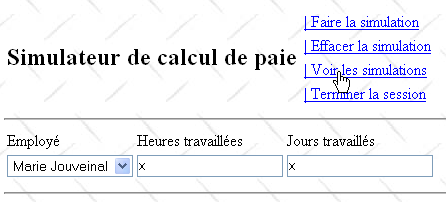
El resultado obtenido:

Pregunta: escribe el método [voirSimulations] de la clase [Form].
Nos aseguraremos de que, si la lista de simulaciones está vacía, la vista que se muestre sea [vueSimulationsVides]:

Para mostrar la vista anterior, se utilizará la siguiente página [simulationsVides.xhtml]:
<?xml version='1.0' encoding='UTF-8' ?>
<!DOCTYPE html PUBLIC "-//W3C//DTD XHTML 1.0 Transitional//EN" "http://www.w3.org/TR/xhtml1/DTD/xhtml1-transitional.dtd">
<html xmlns="http://www.w3.org/1999/xhtml"
xmlns:h="http://java.sun.com/jsf/html"
xmlns:f="http://java.sun.com/jsf/core"
xmlns:ui="http://java.sun.com/jsf/facelets">
<ui:composition template="layout.xhtml">
<ui:define name="part1">
<h2>Votre liste de simulations est vide.</h2>
</ui:define>
</ui:composition>
</html>
12.5.8. La acción [retirerSimulation]
El usuario puede eliminar simulaciones de su lista:
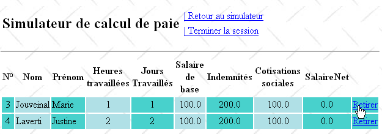
El resultado obtenido es el siguiente:
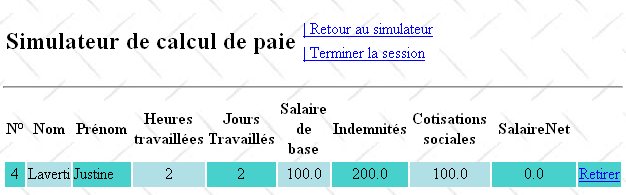
Si eliminamos la última simulación de lo anterior, obtendremos el siguiente resultado:

El código JSF de la columna [Retirer] de la tabla de simulaciones es el siguiente:
<h:dataTable value="#{form.simulations}" var="simulation"
headerClass="simulationsHeaders" columnClasses="simuNum,simuNom,simuPrenom,simuHT,simuJT,simuSalaireBase,simuIndemnites,simuCotisationsSociales,simuSalaireNet">
...
<h:column>
<h:commandLink value="Retirer" action="#{form.retirerSimulation}">
<f:setPropertyActionListener target="#{form.numSimulationToDelete}" value="#{simulation.num}"/>
</h:commandLink>
</h:column>
</h:dataTable>
- línea 5: el enlace [Retirer] está asociado al método [retirerSimulation] de la clase [Form]. Este método necesita conocer el número de la simulación que se va a eliminar. Este número se le proporciona mediante la etiqueta <f:setPropertyActionListener> de la línea 8. Esta etiqueta tiene dos atributos: «target» y «value»; el atributo «target» designa un campo del modelo al que se asignará el valor del atributo «value». En este caso, el número de la simulación que se va a eliminar, #{simulation.num}, se asignará al campo numSimulationToDelete de la clase [Form]:
// modelo de vistas
...
private Integer numSimulationToDelete;
Cuando se ejecute el método [retirerSimulation] de la clase [Form], podrá utilizar el valor que se haya almacenado previamente en el campo numSimulationToDelete.
Pregunta: escribe el método [retirerSimulation] de la clase [Form].
12.5.9. La acción [terminerSession]
El código JSF del enlace [Terminer la session] es el siguiente:
<h:commandLink id="cmdTerminerSession" immediate="true" value="#{msg['form.menu.terminerSession']}" action="#{form.terminerSession}" rendered="#{sessionData.menuTerminerSessionIsRendered}"/>
La acción [terminerSession] asociada al enlace permite al usuario cerrar su sesión y volver al formulario de entrada vacío:


Si el usuario tenía una lista de simulaciones, esta se vacía. Además, la numeración de las simulaciones vuelve a empezar desde 1.
Pregunta: escribe el método [terminerSession] de la clase [Form].
12.6. Integración de la capa web en una arquitectura de tres capas JSF / EJB
La arquitectura de la aplicación web anterior era la siguiente:
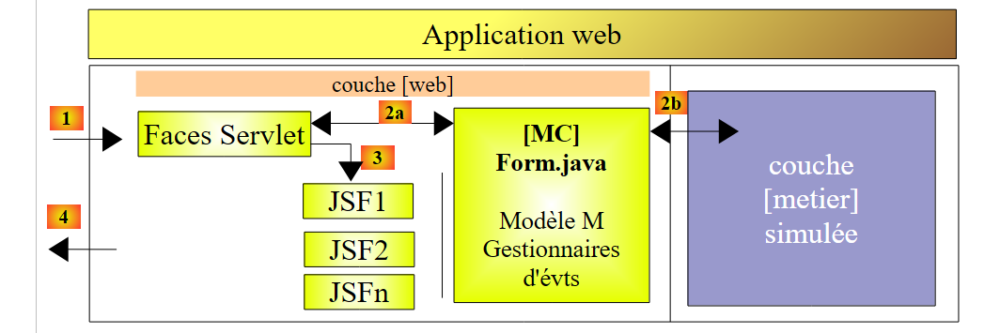 |
Sustituimos la capa simulada [métier] por las capas [métier, DAO, jpa] implementadas mediante EJB en el apartado 7.1:
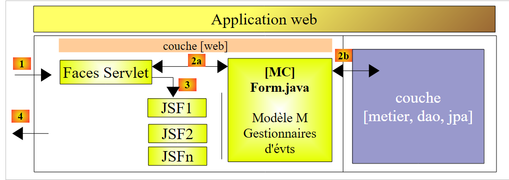 |
Ejercicio práctico: realizar la integración de las capas JSF y EJB siguiendo la metodología del apartado 11.
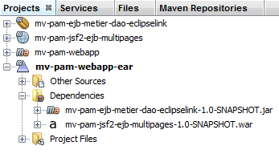 |